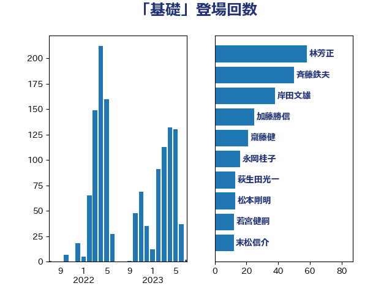

単語「基礎」

| 斉藤鉄夫 | 公明党 | 55 回 |
| 林芳正 | 自由民主党 | 19 回 |
| 萩生田光一 | 自由民主党 | 17 回 |
| 岡田克也 | 立憲民主党 | 15 回 |
| 岸田文雄 | 自由民主党 | 14 回 |
| 茂木敏充 | 自由民主党 | 14 回 |
| 平井卓也 | 自由民主党 | 13 回 |
| 末松信介 | 自由民主党 | 12 回 |
| 若宮健嗣 | 自由民主党 | 12 回 |
| 田村憲久 | 自由民主党 | 10 回 |
| 菅義偉 | 自由民主党 | 10 回 |
| 赤羽一嘉 | 公明党 | 10 回 |
| 長峯誠 | 自由民主党 | 10 回 |
| 後藤祐一 | 立憲民主党 | 9 回 |
| 野田聖子 | 自由民主党 | 9 回 |
| 階猛 | 立憲民主党 | 9 回 |
| 高橋光男 | 公明党 | 9 回 |
| 小林鷹之 | 自由民主党 | 8 回 |
| 小沼巧 | 立憲民主党 | 8 回 |
| 岸真紀子 | 立憲民主党 | 8 回 |
| 梶山弘志 | 自由民主党 | 8 回 |
| 武田良太 | 自由民主党 | 8 回 |
| 川田龍平 | 立憲民主党 | 7 回 |
| 竹内真二 | 公明党 | 7 回 |
| 古川禎久 | 自由民主党 | 6 回 |
| 吉川沙織 | 立憲民主党 | 6 回 |
| 大口善徳 | 公明党 | 6 回 |
| 岸信夫 | 自由民主党 | 6 回 |
| 杉久武 | 公明党 | 6 回 |
| 神津たけし | 立憲民主党 | 6 回 |
| 井上信治 | 自由民主党 | 5 回 |
| 吉田忠智 | 立憲民主党 | 5 回 |
| 塩田博昭 | 公明党 | 5 回 |
| 片山大介 | 日本維新の会 | 5 回 |
| 石原宏高 | 自由民主党 | 5 回 |
| 穀田恵二 | 日本共産党 | 5 回 |
| 笠井亮 | 日本共産党 | 5 回 |
| 舩後靖彦 | れいわ新選組 | 5 回 |
| 金子俊平 | 自由民主党 | 5 回 |
| 一谷勇一郎 | 日本維新の会 | 4 回 |
| 伊波洋一 | 無所属 | 4 回 |
| 伊藤岳 | 日本共産党 | 4 回 |
| 倉林明子 | 日本共産党 | 4 回 |
| 加藤勝信 | 自由民主党 | 4 回 |
| 古川康 | 自由民主党 | 4 回 |
| 吉良よし子 | 日本共産党 | 4 回 |
| 塩川鉄也 | 日本共産党 | 4 回 |
| 山崎誠 | 立憲民主党 | 4 回 |
| 本村伸子 | 日本共産党 | 4 回 |
| 浅野哲 | 国民民主党 | 4 回 |
| 田村智子 | 日本共産党 | 4 回 |
| 緒方林太郎 | 無所属 | 4 回 |
| 足立康史 | 日本維新の会 | 4 回 |
| 野田国義 | 立憲民主党 | 4 回 |
| 金子恭之 | 自由民主党 | 4 回 |
| 青木愛 | 立憲民主党 | 4 回 |
| 丹羽秀樹 | 自由民主党 | 3 回 |
| 伊藤渉 | 公明党 | 3 回 |
| 國重徹 | 公明党 | 3 回 |
| 坂本哲志 | 自由民主党 | 3 回 |
| 城井崇 | 立憲民主党 | 3 回 |
| 安江伸夫 | 公明党 | 3 回 |
| 宮本徹 | 日本共産党 | 3 回 |
| 小宮山泰子 | 立憲民主党 | 3 回 |
| 小寺裕雄 | 自由民主党 | 3 回 |
| 小泉進次郎 | 自由民主党 | 3 回 |
| 小野泰輔 | 日本維新の会 | 3 回 |
| 山添拓 | 日本共産党 | 3 回 |
| 山際大志郎 | 自由民主党 | 3 回 |
| 岡本あき子 | 立憲民主党 | 3 回 |
| 岩渕友 | 日本共産党 | 3 回 |
| 後藤茂之 | 自由民主党 | 3 回 |
| 打越さく良 | 立憲民主党 | 3 回 |
| 木原稔 | 自由民主党 | 3 回 |
| 池田佳隆 | 自由民主党 | 3 回 |
| 田名部匡代 | 立憲民主党 | 3 回 |
| 芳賀道也 | 国民民主党 | 3 回 |
| 野上浩太郎 | 自由民主党 | 3 回 |
| 音喜多駿 | 日本維新の会 | 3 回 |
| おおつき紅葉 | 立憲民主党 | 2 回 |
| 上川陽子 | 自由民主党 | 2 回 |
| 下村博文 | 自由民主党 | 2 回 |
| 伊藤孝恵 | 国民民主党 | 2 回 |
| 伴野豊 | 立憲民主党 | 2 回 |
| 佐藤英道 | 公明党 | 2 回 |
| 北側一雄 | 公明党 | 2 回 |
| 古屋範子 | 公明党 | 2 回 |
| 吉田統彦 | 立憲民主党 | 2 回 |
| 大西健介 | 立憲民主党 | 2 回 |
| 室井邦彦 | 日本維新の会 | 2 回 |
| 小田原潔 | 自由民主党 | 2 回 |
| 尾崎正直 | 自由民主党 | 2 回 |
| 山下芳生 | 日本共産党 | 2 回 |
| 山口壯 | 自由民主党 | 2 回 |
| 山田宏 | 自由民主党 | 2 回 |
| 岬麻紀 | 日本維新の会 | 2 回 |
| 工藤彰三 | 自由民主党 | 2 回 |
| 平口洋 | 自由民主党 | 2 回 |
| 徳永エリ | 立憲民主党 | 2 回 |
| 志位和夫 | 日本共産党 | 2 回 |
| 新藤義孝 | 自由民主党 | 2 回 |
| 東徹 | 日本維新の会 | 2 回 |
| 橋本岳 | 自由民主党 | 2 回 |
| 橘慶一郎 | 自由民主党 | 2 回 |
| 浜口誠 | 国民民主党 | 2 回 |
| 牧山ひろえ | 立憲民主党 | 2 回 |
| 牧島かれん | 自由民主党 | 2 回 |
| 田村まみ | 国民民主党 | 2 回 |
| 石井章 | 日本維新の会 | 2 回 |
| 石井苗子 | 日本維新の会 | 2 回 |
| 石川博崇 | 公明党 | 2 回 |
| 秋本真利 | 自由民主党 | 2 回 |
| 緑川貴士 | 立憲民主党 | 2 回 |
| 羽生田俊 | 自由民主党 | 2 回 |
| 蓮舫 | 立憲民主党 | 2 回 |
| 藤巻健太 | 日本維新の会 | 2 回 |
| 西田実仁 | 公明党 | 2 回 |
| 鈴木俊一 | 自由民主党 | 2 回 |
| 鈴木英敬 | 自由民主党 | 2 回 |
| 長妻昭 | 立憲民主党 | 2 回 |
| 青山周平 | 自由民主党 | 2 回 |
| 馬場伸幸 | 日本維新の会 | 2 回 |
| 高橋千鶴子 | 日本共産党 | 2 回 |
| 高良鉄美 | 無所属 | 2 回 |
| 高階恵美子 | 自由民主党 | 2 回 |
| 鰐淵洋子 | 公明党 | 2 回 |
| 三浦信祐 | 公明党 | 1 回 |
| 上月良祐 | 自由民主党 | 1 回 |
| 上田清司 | 国民民主党 | 1 回 |
| 上野通子 | 自由民主党 | 1 回 |
| 中川正春 | 立憲民主党 | 1 回 |
| 中根一幸 | 自由民主党 | 1 回 |
| 中谷一馬 | 立憲民主党 | 1 回 |
| 中谷元 | 自由民主党 | 1 回 |
| 井出庸生 | 自由民主党 | 1 回 |
| 井坂信彦 | 立憲民主党 | 1 回 |
| 今井絵理子 | 自由民主党 | 1 回 |
| 伊佐進一 | 公明党 | 1 回 |
| 佐藤正久 | 自由民主党 | 1 回 |
| 加田裕之 | 自由民主党 | 1 回 |
| 加藤鮎子 | 自由民主党 | 1 回 |
| 勝部賢志 | 立憲民主党 | 1 回 |
| 古川元久 | 国民民主党 | 1 回 |
| 古賀之士 | 立憲民主党 | 1 回 |
| 古賀篤 | 自由民主党 | 1 回 |
| 吉川元 | 立憲民主党 | 1 回 |
| 国光あやの | 自由民主党 | 1 回 |
| 堀井巌 | 自由民主党 | 1 回 |
| 堀内詔子 | 自由民主党 | 1 回 |
| 大塚拓 | 自由民主党 | 1 回 |
| 大塚耕平 | 国民民主党 | 1 回 |
| 大島敦 | 立憲民主党 | 1 回 |
| 大野泰正 | 自由民主党 | 1 回 |
| 奥野総一郎 | 立憲民主党 | 1 回 |
| 宮下一郎 | 自由民主党 | 1 回 |
| 宮口治子 | 立憲民主党 | 1 回 |
| 宮崎政久 | 自由民主党 | 1 回 |
| 宮本岳志 | 日本共産党 | 1 回 |
| 小池晃 | 日本共産党 | 1 回 |
| 小里泰弘 | 自由民主党 | 1 回 |
| 山口晋 | 自由民主党 | 1 回 |
| 山本太郎 | れいわ新選組 | 1 回 |
| 山田俊男 | 自由民主党 | 1 回 |
| 山田太郎 | 自由民主党 | 1 回 |
| 山谷えり子 | 自由民主党 | 1 回 |
| 岡本三成 | 公明党 | 1 回 |
| 市村浩一郎 | 日本維新の会 | 1 回 |
| 平林晃 | 公明党 | 1 回 |
| 平沼正二郎 | 自由民主党 | 1 回 |
| 斎藤アレックス | 国民民主党 | 1 回 |
| 日下正喜 | 公明党 | 1 回 |
| 本田太郎 | 自由民主党 | 1 回 |
| 松川るい | 自由民主党 | 1 回 |
| 松本尚 | 自由民主党 | 1 回 |
| 柚木道義 | 立憲民主党 | 1 回 |
| 柳ヶ瀬裕文 | 日本維新の会 | 1 回 |
| 柿沢未途 | 無所属 | 1 回 |
| 森屋宏 | 自由民主党 | 1 回 |
| 森山浩行 | 立憲民主党 | 1 回 |
| 櫻井周 | 立憲民主党 | 1 回 |
| 武井俊輔 | 自由民主党 | 1 回 |
| 武見敬三 | 自由民主党 | 1 回 |
| 江島潔 | 自由民主党 | 1 回 |
| 江田憲司 | 立憲民主党 | 1 回 |
| 河西宏一 | 公明党 | 1 回 |
| 河野義博 | 公明党 | 1 回 |
| 浅田均 | 日本維新の会 | 1 回 |
| 浜野喜史 | 国民民主党 | 1 回 |
| 清水真人 | 自由民主党 | 1 回 |
| 渡辺創 | 立憲民主党 | 1 回 |
| 渡辺周 | 立憲民主党 | 1 回 |
| 渡辺猛之 | 自由民主党 | 1 回 |
| 湯原俊二 | 立憲民主党 | 1 回 |
| 熊田裕通 | 自由民主党 | 1 回 |
| 牧原秀樹 | 自由民主党 | 1 回 |
| 猪口邦子 | 自由民主党 | 1 回 |
| 玉木雄一郎 | 国民民主党 | 1 回 |
| 田中健 | 国民民主党 | 1 回 |
| 田中英之 | 自由民主党 | 1 回 |
| 田島麻衣子 | 立憲民主党 | 1 回 |
| 田村貴昭 | 日本共産党 | 1 回 |
| 田畑裕明 | 自由民主党 | 1 回 |
| 田野瀬太道 | 無所属 | 1 回 |
| 白石洋一 | 立憲民主党 | 1 回 |
| 福山哲郎 | 立憲民主党 | 1 回 |
| 福島伸享 | 無所属 | 1 回 |
| 福田昭夫 | 立憲民主党 | 1 回 |
| 福重隆浩 | 公明党 | 1 回 |
| 空本誠喜 | 日本維新の会 | 1 回 |
| 竹谷とし子 | 公明党 | 1 回 |
| 笹川博義 | 自由民主党 | 1 回 |
| 菊田真紀子 | 立憲民主党 | 1 回 |
| 落合貴之 | 立憲民主党 | 1 回 |
| 藤丸敏 | 自由民主党 | 1 回 |
| 藤木眞也 | 自由民主党 | 1 回 |
| 西村康稔 | 自由民主党 | 1 回 |
| 西銘恒三郎 | 自由民主党 | 1 回 |
| 谷合正明 | 公明党 | 1 回 |
| 近藤和也 | 立憲民主党 | 1 回 |
| 進藤金日子 | 自由民主党 | 1 回 |
| 道下大樹 | 立憲民主党 | 1 回 |
| 野田佳彦 | 立憲民主党 | 1 回 |
| 金城泰邦 | 公明党 | 1 回 |
| 鈴木貴子 | 自由民主党 | 1 回 |
| 長坂康正 | 自由民主党 | 1 回 |
| 門山宏哲 | 自由民主党 | 1 回 |
| 青山大人 | 立憲民主党 | 1 回 |
| 青柳仁士 | 日本維新の会 | 1 回 |
| 高木啓 | 自由民主党 | 1 回 |
| 高村正大 | 自由民主党 | 1 回 |
| 高野光二郎 | 自由民主党 | 1 回 |
| 鬼木誠 | 立憲民主党 | 1 回 |
| 鳩山二郎 | 自由民主党 | 1 回 |
| 麻生太郎 | 自由民主党 | 1 回 |